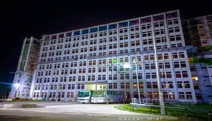
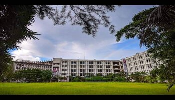
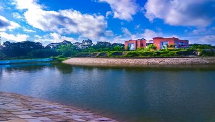
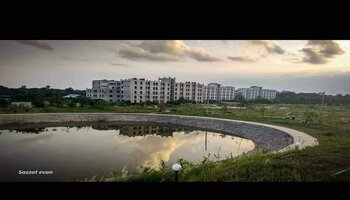
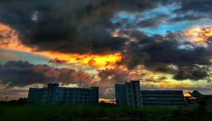
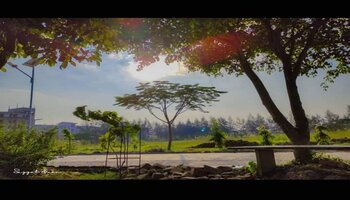

Here is some beautiful Picture of Bangabandhu Sheikh Mujibur Rahman Science and Technology University






Welcome to the website of Bangabandhu Sheikh Mujibur Rahman Science and Technology University (BSMRSTU). BSMRSTU was established at 2001 by the name of our great leader and father of the nation Bangabandhu Sheikh Mujibur Rahman, who was born in Tungipara of Gopalganj. This university has a great vision to flourish research and innovation in the field of science and technology. BSMRSTU prides itself for the depth of its involvement in science and technology. It has a great vision to demonstrate its excellence and brilliance in teaching and research. The esteemed academicians have dedication and commitment in conveying their wisdom and enlightening the path of the national development beyond normal boundaries. From its humble beginning in 2001, BSMRSTU has expanded its frontiers in various fields of science and technology such as Computer Science and Engineering, Electrical and Electronic Engineering, Applied Physics and Electronics, Mathematics, Statistics, Analytical and Environmental Chemistry, Pharmacy, Management, Accounting and Information Systems, Economics, Sociology, Public Administration, English and Bangla. It has established Bangabandhu Institute of Liberation War and Bangladesh Studies in order to confer M.Phil. and Ph.D. degrees. BSMRSTU strives towards excellence through the practice of high quality culture in teaching and research. It aims to become a world class university with the vision of being an academic hub that creates the intellectual capital required for the development of the nation and sustaining the growth of the country. Attention is paid to global social and cultural changes for framing the academic programme. It maintains a constant link with industries and businesses. I hope that anyone who visits this website will get a clear picture of BSMRSTU as a whole and will help him make the right choice. Discover the university for yourself, explore the available opportunities to develop your potentials and realize your dreams.